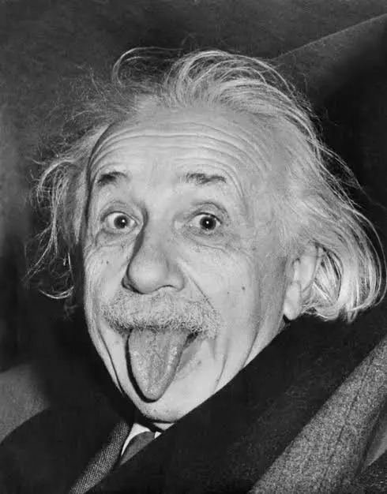

"Imagination is more important than knowledge. For knowledge is limited." — Albert Einstein
The most famous equation in physics (Mass-Energy Equivalence):
E = mc2
The Lorentz factor for Time Dilation:
t' = t / √(1 - v2/c2)
| Body | Type | Gravity (m/s2) | Has Rings? |
|---|---|---|---|
| Mercury | Terrestrial | 3.7 | No |
| Venus | Terrestrial | 8.87 | No |
| Earth | Terrestrial | 9.81 | No |
| Mars | Terrestrial | 3.71 | No |
| Jupiter | Gas Giant | 24.79 | Yes |
| Saturn | Gas Giant | 10.44 | Yes |
Visualizing diameter using Earth as the baseline (100%):
38%Note: The progress bar represents the ratio compared to Earth's size.
Travel at 90% the speed of light for 1 year. See what happens on Earth:
* (Dubhe)
\
* (Merak)
\
*----* (Phecda)
/ /
*----*----* (Alkaid) (Megrez)
Data provided by NASA.
Reference: "The Meaning of Relativity" by Albert Einstein (1922)